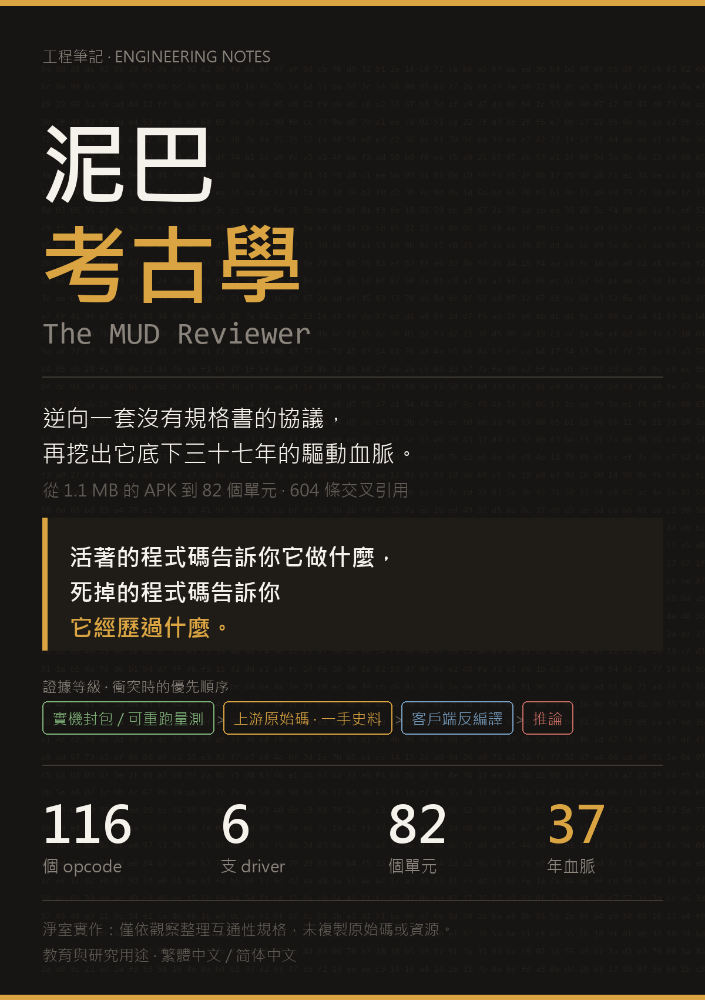

REVERSING ZJMUD
一本關於「把一套沒有規格書的協議還原出來、再據以重寫一個客戶端」的工程筆記——從 1.1 MB 的 APK 到 177 條測試。

逆向工程的盡頭，不是「我看懂了」，而是「我能證明它，而且我的實作經得起真機打臉」。
📄 繁體中文 Markdown 📄 简体中文 Markdown
書裡每一條協議斷言都標了出處。衝突時的順序永遠是： 🟢 實機封包 > 🟡 伺服器原始碼 > 🟠 客戶端反編譯 > 🔴 推論
🟢 實機封包
🟡 伺服器原始碼
🟠 客戶端反編譯
🔴 推論